Up until now, all of our dependent variables have been quantitative outcomes: wages, prices, birthweight, exam scores, and so on. But many important questions in economics—and especially in health economics and policy evaluation—involve qualitative outcomes. Did a patient survive? Did a worker find a job? Did a student graduate? Did a family enroll in a public program?
In the simplest case, we can represent these outcomes as binary variables that take the value 1 if the event occurred and 0 otherwise. This chapter explores how to model binary outcomes using regression, starting with the straightforward linear probability model and then introducing logistic regression as an alternative.
9.1 From Continuous to Binary Outcomes
To make the shift from continuous to binary outcomes concrete, let’s look at some data. The mroz dataset in the wooldridge package contains information on 753 married women in 1975. The variable inlf equals 1 if a woman is in the labor force and 0 otherwise.
lf_data <- wooldridge::mrozggplot(lf_data, aes(x =factor(inlf), fill =factor(inlf))) +geom_bar(width =0.5) +geom_text(stat ="count", aes(label =after_stat(count)), vjust =-0.5, size =4.5) +scale_fill_manual(values =c("0"="#D55E00", "1"="#0072B2"),labels =c("Not in LF", "In LF")) +scale_x_discrete(labels =c("0"="Not in Labor Force (y = 0)","1"="In Labor Force (y = 1)")) +labs(x =NULL,y ="Number of Women",title ="Labor Force Participation Among Married Women (1975)") +theme_minimal() +theme(legend.position ="none",plot.title =element_text(hjust =0.5))
Figure 9.1: The distribution of a binary outcome: women’s labor force participation. Unlike a continuous variable, the outcome can only take two values.
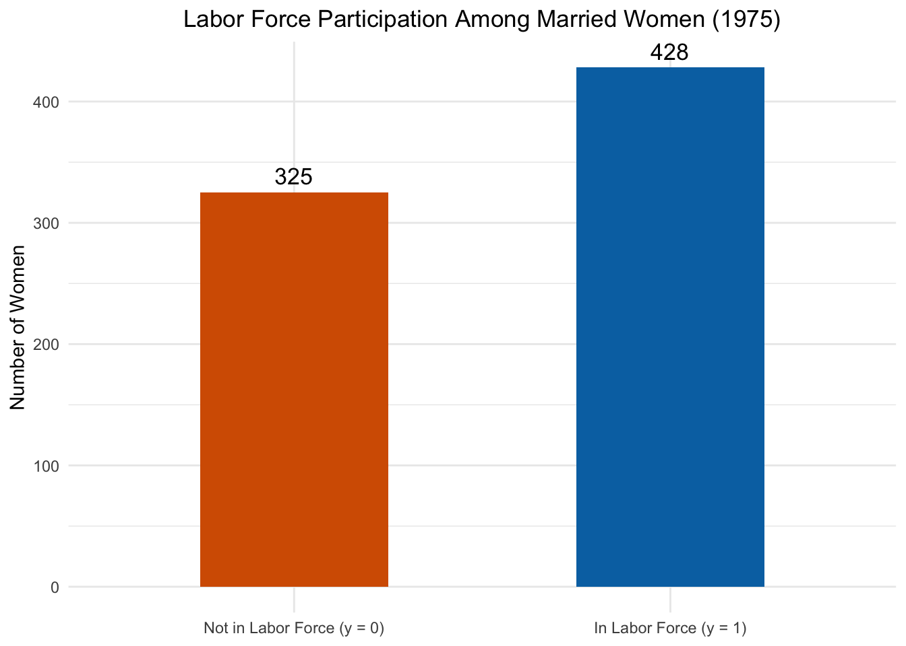
As Figure 9.1 shows, about 57% of the women in the sample are in the labor force and 43% are not. This is fundamentally different from the continuous outcomes we have worked with before. There are no “in-between” values—a woman is either in the labor force or she isn’t.
So what happens if we try to use OLS to model this outcome? The answer leads us to the linear probability model.
Recall that in OLS, the predicted value \(\hat{y}\) estimates the conditional expectation \(E(y | \mathbf{x})\). When \(y\) can only be 0 or 1, this conditional expectation has a special meaning. By the definition of expected value:
In other words, the predicted value from our regression is the probability that the event occurs, given the values of the explanatory variables. This is a powerful result: even though we’re running plain OLS, the output has a probabilistic interpretation.
This means we cannot interpret \(\beta_j\) in the usual way—as the change in \(y\) when \(x_j\) increases by one unit—because \(y\) doesn’t change continuously. Instead, we interpret \(\beta_j\) as the change in the probability that \(y = 1\) when \(x_j\) increases by one unit, holding all other variables constant.
This is why OLS applied to a binary outcome is called the linear probability model (LPM).
The LPM Interpretation Rule
In the linear probability model, \(\hat{\beta}_j\) tells us the change in probability (not percentage change!) of the event occurring for a one-unit increase in \(x_j\). If \(\hat{\beta}_j = -0.15\), the probability decreases by 0.15, or equivalently by 15 percentage points. Be careful with language: “15 percentage points” and “15 percent” are not the same thing!
9.3 LPM Example: Women’s Labor Force Participation
To see how the LPM works in practice, let’s examine a classic question in labor economics: what factors affect whether married women participate in the labor force?
where kidslt6 is the number of children under age 6, kidsge6 is the number of children aged 6–18, nwifeinc is the wife’s non-labor income (in thousands of dollars), and motheduc is the mother’s years of education.
Before estimating the model, let’s visualize the raw relationship between our key variable of interest—young children—and labor force participation:
lf_data |>group_by(kidslt6) |>summarise(pct_inlf =mean(inlf),n =n()) |>ggplot(aes(x =factor(kidslt6), y = pct_inlf)) +geom_col(fill ="#0072B2", width =0.5) +geom_text(aes(label =paste0(round(pct_inlf *100, 1), "%\n(n=", n, ")")),vjust =-0.3, size =3.5) +scale_y_continuous(labels = scales::percent_format(), limits =c(0, 0.8)) +labs(x ="Number of Children Under Age 6",y ="Share in Labor Force",title ="Labor Force Participation by Number of Young Children") +theme_minimal() +theme(plot.title =element_text(hjust =0.5))
Figure 9.2: Women with more young children are less likely to participate in the labor force. Each bar shows the share of women in each group who are working.
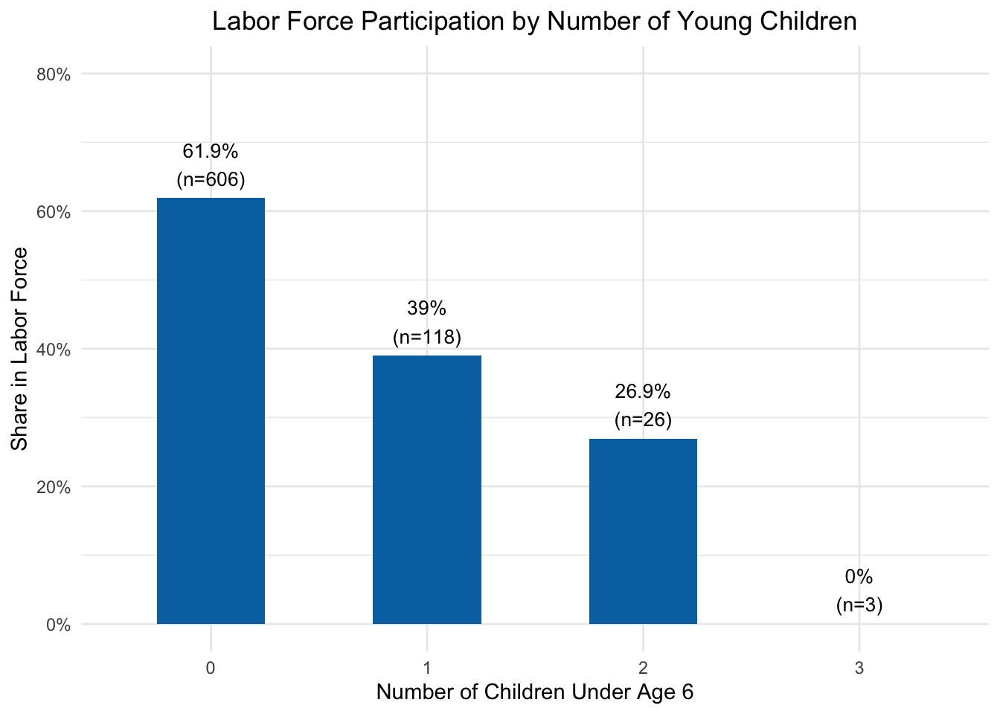
Figure 9.2 makes the pattern clear even before we run any regressions: women with no young children have the highest labor force participation rate, and the rate drops sharply with each additional young child. Now let’s see what OLS tells us after controlling for other factors:
Call:
lm(formula = inlf ~ kidslt6 + kidsge6 + nwifeinc + motheduc,
data = lf_data)
Residuals:
Min 1Q Median 3Q Max
-0.8023 -0.5409 0.2867 0.3992 0.9144
Coefficients:
Estimate Std. Error t value Pr(>|t|)
(Intercept) 0.541676 0.058607 9.242 < 0.0000000000000002 ***
kidslt6 -0.212154 0.033588 -6.316 0.000000000459 ***
kidsge6 0.005765 0.013262 0.435 0.663874
nwifeinc -0.005374 0.001512 -3.555 0.000402 ***
motheduc 0.019190 0.005250 3.655 0.000275 ***
---
Signif. codes: 0 '***' 0.001 '**' 0.01 '*' 0.05 '.' 0.1 ' ' 1
Residual standard error: 0.4781 on 748 degrees of freedom
Multiple R-squared: 0.07454, Adjusted R-squared: 0.06959
F-statistic: 15.06 on 4 and 748 DF, p-value: 0.000000000007567
9.3.1 Interpreting the LPM Coefficients
Let’s walk through each coefficient carefully.
The coefficient on kidslt6 (\(\hat{\beta}_1 \approx -0.21\)) tells us that each additional child under age 6 decreases the probability of being in the labor force by about 21 percentage points, holding all else constant. This is a large and statistically significant effect. To put this in perspective, going from 0 to 1 young child reduces the predicted probability of working by roughly one-fifth.
The coefficient on kidsge6 (\(\hat{\beta}_2 \approx 0.01\)) suggests that children aged 6 and older have essentially no effect on labor force participation—the coefficient is small and not statistically significant. This makes intuitive sense: school-age children require less constant supervision than young children, so they impose fewer constraints on a mother’s ability to work outside the home.
The coefficient on nwifeinc (\(\hat{\beta}_3 \approx -0.005\)) indicates that higher non-labor income is associated with a slightly lower probability of working. Each additional thousand dollars of non-labor income reduces the probability by about half a percentage point. This is consistent with basic labor supply theory: when a household has more non-labor income (e.g., from a higher-earning husband), the wife has less financial pressure to enter the labor force.
The coefficient on motheduc (\(\hat{\beta}_4 \approx 0.02\)) suggests that women whose mothers had more education are slightly more likely to participate in the labor force. Each additional year of the mother’s education is associated with about a 2 percentage point increase in the probability of working.
9.4 Problems with the Linear Probability Model
While the LPM is simple and intuitive, it has some important drawbacks that we need to understand.
9.4.1 Problem 1: Predictions Outside [0, 1]
The most obvious problem is that the LPM can produce predicted probabilities that are less than 0 or greater than 1. Since probabilities must lie between 0 and 1, this is nonsensical.
To see why this happens, recall that the LPM is just a straight line. A straight line extends infinitely in both directions, so for extreme enough values of \(x\), the predicted value will inevitably cross the 0 or 1 boundary.
Let’s see this concretely. Consider a woman with 2 children under 6, 0 older children, non-labor income of \(30{,}000\), and a mother with 9 years of education. Using our estimates, her predicted probability of being in the labor force is:
# Predicted probability for a specific womanexample_pred <-predict(reg, newdata =data.frame(kidslt6 =2, kidsge6 =0, nwifeinc =30, motheduc =9))cat("Predicted probability:", round(example_pred, 4), "\n")
Predicted probability: 0.1288
A negative probability—obviously impossible!
We can see how widespread this problem is by looking at the full distribution of predicted probabilities from our model:
lf_data <- lf_data |>mutate(pred =predict(reg, type ="response"))ggplot(data = lf_data, aes(x = pred)) +geom_histogram(binwidth =0.05, fill ="#0072B2", color ="white", alpha =0.8) +geom_vline(xintercept =0, linetype ="dashed", color ="red", linewidth =0.8) +geom_vline(xintercept =1, linetype ="dashed", color ="red", linewidth =0.8) +labs(x ="Predicted Probability (LPM)",y ="Number of Observations",title ="Distribution of LPM Predicted Probabilities") +theme_minimal() +theme(plot.title =element_text(hjust =0.5))
Figure 9.3: Distribution of LPM predicted probabilities. The dashed red lines mark the valid [0, 1] range. Some predictions fall below zero.
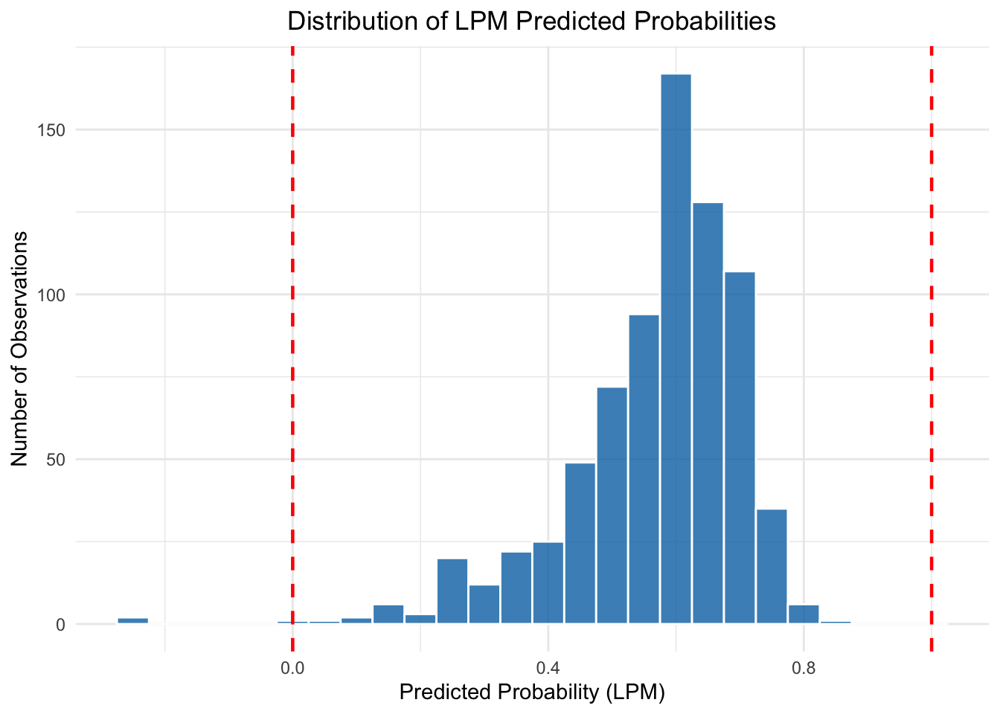
We can also see this by plotting the predicted probabilities against the number of young children:
ggplot(data = lf_data) +geom_jitter(aes(x = kidslt6, y = pred), alpha =0.3, width =0.15, color ="#0072B2") +geom_hline(yintercept =0, linetype ="dashed", color ="red", linewidth =0.8) +geom_hline(yintercept =1, linetype ="dashed", color ="red", linewidth =0.8) +annotate("rect", xmin =-0.5, xmax =3.5, ymin =-0.35, ymax =0,alpha =0.15, fill ="red") +annotate("text", x =2.8, y =-0.15, label ="Impossible\nregion",color ="red", fontface ="italic", size =3.5) +coord_cartesian(ylim =c(-0.35, 1.1)) +labs(x ="Number of Children Under Age 6",y ="Predicted Probability of Labor Force Participation") +theme_minimal()
Figure 9.4: LPM predicted probabilities by number of young children. Some predictions fall below zero, violating the basic rules of probability.
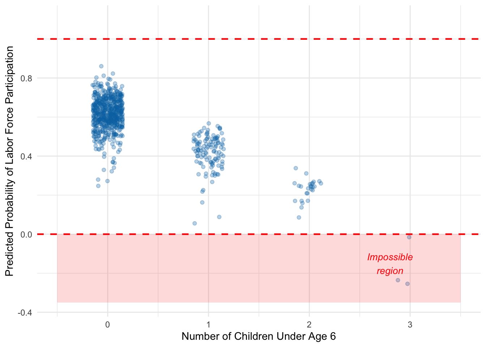
As Figure 9.4 shows, some predicted probabilities fall below zero—particularly for women with multiple young children. The LPM simply cannot respect the fact that probabilities are bounded.
9.4.2 Problem 2: Heteroskedasticity
A second, more subtle problem is that the LPM always exhibits heteroskedasticity. Recall that one of the Gauss-Markov assumptions (GM5) requires that the variance of the error term be constant across observations. When \(y\) is binary, this assumption is necessarily violated.
To see why, think about what the error term looks like in the LPM. When \(y\) is 0 or 1, the error \(\mu = y - E(y|\mathbf{x})\) can only take two possible values for any given \(\mathbf{x}\):
If \(y = 1\): \(\mu = 1 - p(\mathbf{x})\), which happens with probability \(p(\mathbf{x})\)
If \(y = 0\): \(\mu = 0 - p(\mathbf{x}) = -p(\mathbf{x})\), which happens with probability \(1 - p(\mathbf{x})\)
where \(p(\mathbf{x}) = E(y|\mathbf{x})\) is the predicted probability. The variance of this error is:
This variance depends on \(p(\mathbf{x})\), which depends on \(\mathbf{x}\). The variance is largest when \(p = 0.5\) (maximum uncertainty about the outcome) and smallest when \(p\) is near 0 or 1 (the outcome is nearly certain).
Let’s visualize this:
Figure 9.5: The variance of the error term in a binary outcome model depends on the predicted probability. Variance is maximized at p = 0.5 and falls toward zero as p approaches 0 or 1.
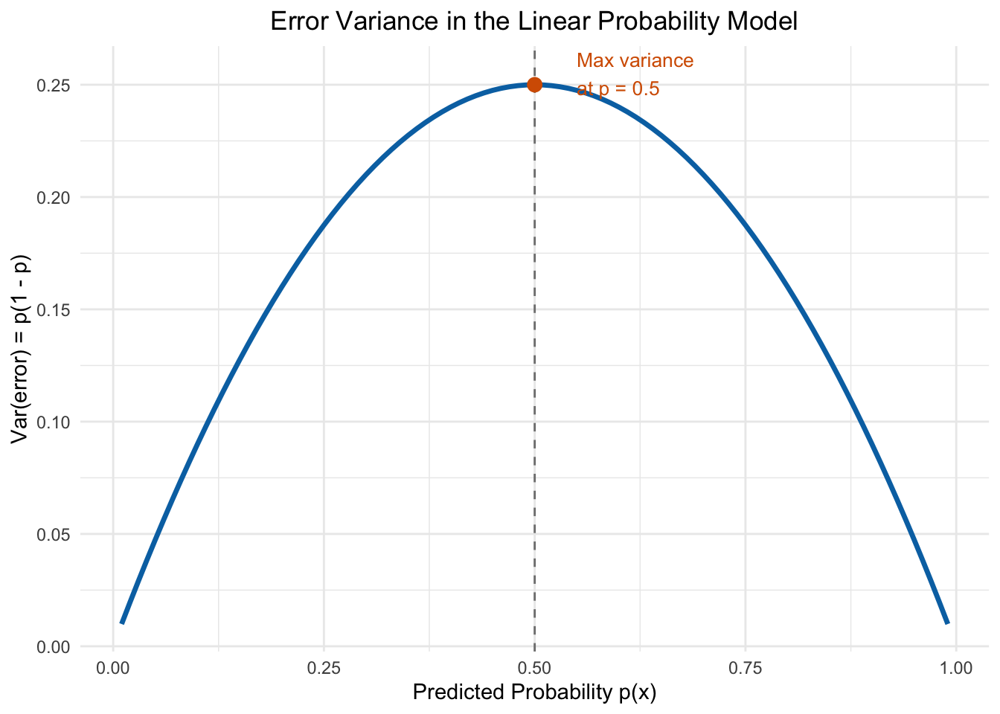
Because of this built-in heteroskedasticity, the OLS estimator in the LPM is not BLUE—it is unbiased, but not the most efficient linear estimator. The practical consequence is that our standard errors will be incorrect unless we use robust standard errors, as we discussed in the chapter on heteroskedasticity.
LPM: Use with Caution
Despite these problems, the LPM remains widely used in economics because of its simplicity and because the coefficient estimates are often very similar to those from more sophisticated models. The key is to be aware of its limitations: always use robust standard errors to address heteroskedasticity, and be cautious about interpreting predicted probabilities near the boundaries.
9.5 An Alternative: Logistic Regression
Given the issues with the LPM, researchers sometimes turn to alternative estimators that are specifically designed for binary outcomes. The most common of these is the logit (or logistic regression) model.
The key idea is to replace the linear function with a non-linear function that is guaranteed to produce predictions between 0 and 1. Instead of modeling the probability directly as a linear function of \(\mathbf{x}\), we write:
where \(G(\cdot)\) is a function that maps any real number into the interval \((0, 1)\).
9.5.1 The Logistic Function
In logit regression, we specifically define \(G(\cdot)\) to be the logistic function:
\[
G(z) = \frac{\exp(z)}{1 + \exp(z)}
\]
This function has an S-shaped (sigmoid) curve that is worth studying carefully:
Figure 9.6: The logistic function maps any real number to the (0, 1) interval. It is nearly linear in the middle but curves at the extremes, ensuring predicted probabilities always stay between 0 and 1.
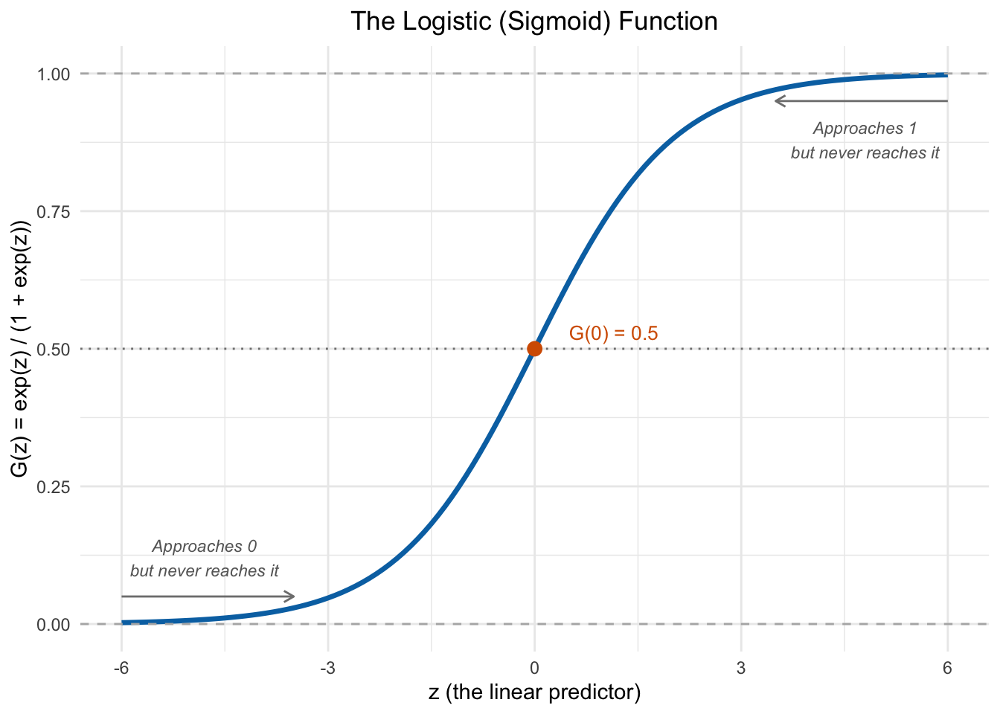
Several features of Figure 9.6 are worth noting. When \(z\) is very negative, \(G(z)\) is close to 0; when \(z\) is very positive, \(G(z)\) is close to 1; and at \(z = 0\), \(G(z) = 0.5\). Crucially, \(G(z)\) is strictly between 0 and 1 for all values of \(z\)—so the logit model can never produce impossible predicted probabilities.
Notice also that the logistic function is nearly linear in the middle of its range (roughly between \(z = -2\) and \(z = 2\)) but curves toward the boundaries at the extremes. This will be important later when we compare the LPM and logit results.
9.5.2 Comparing the LPM and Logit Visually
To build intuition for why the logistic function matters, let’s compare what the LPM and logit model look like when fit to the same data. Using our full model with all four explanatory variables, we can compute a single “index” for each woman—the linear combination \(\hat{\beta}_0 + \hat{\beta}_1 x_1 + \cdots + \hat{\beta}_k x_k\)—and then plot how each model translates that index into a predicted probability. This is the clearest way to see the difference between the two approaches:
Figure 9.7: The LPM (blue, dashed) predicts probability as a straight line that can exceed [0, 1]. The logit (orange, solid) wraps the same linear index through the S-shaped logistic function, keeping predictions in bounds. Each gray point is one woman in the data, plotted at y = 0 or y = 1.
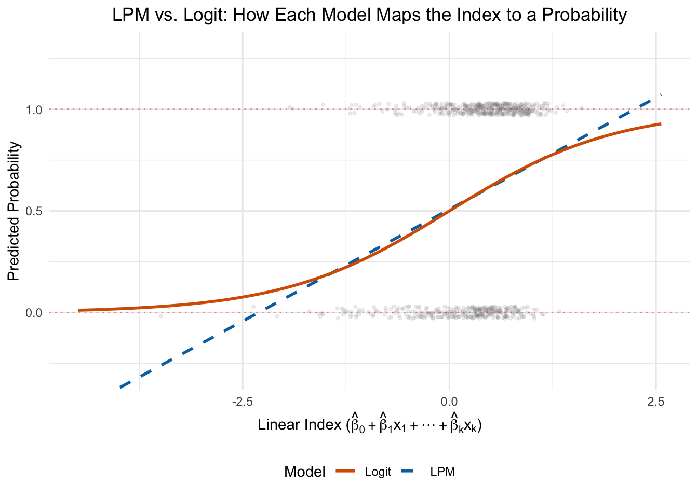
In Figure 9.7, the gray points show the actual data—all at \(y = 0\) or \(y = 1\). The x-axis is the linear index, which combines all the explanatory variables into a single score for each woman. Women with low index values have characteristics that predict low labor force participation (e.g., many young children, high non-labor income); women with high index values have characteristics that predict high participation.
The LPM maps this index to a predicted probability using a straight line, which inevitably extends beyond the [0, 1] bounds at the extremes. The logit wraps the same index through the S-shaped logistic function, keeping all predictions between 0 and 1. In the middle range—where most of the data sits—the two models agree closely. They diverge mainly at the tails, which is exactly where the LPM’s out-of-bounds problem arises.
9.5.3 Maximum Likelihood Estimation
How do we estimate the logit model if we can’t use OLS? The answer is Maximum Likelihood Estimation (MLE). The intuition behind MLE is straightforward, even if the mathematical details are complex.
Think of it this way. For any set of \(\beta\) coefficients, the logistic function gives us a predicted probability \(\hat{p}_i\) for each observation \(i\). If \(y_i = 1\) (the event occurred), we want \(\hat{p}_i\) to be high—close to 1. If \(y_i = 0\) (the event did not occur), we want \(\hat{p}_i\) to be low—close to 0.
The likelihood is a measure of how well the model’s predicted probabilities match the actual outcomes. MLE finds the set of \(\beta\) coefficients that maximizes this likelihood—that is, the coefficients that make the observed data most probable.
The process works iteratively:
Start with initial guesses for the \(\beta\) coefficients.
Plug these \(\beta\)s into the logistic function to calculate predicted probabilities.
Compute the total likelihood of observing the actual 0s and 1s given those predictions.
Adjust the \(\beta\)s to increase the likelihood.
Repeat until the likelihood can’t be improved further.
The details of how MLE works are beyond the scope of this course, but it is useful to know what is happening under the hood. The key takeaway is that MLE finds the coefficients that make the observed data most likely, rather than minimizing the sum of squared residuals like OLS does.
OLS vs. MLE: Two Different Objectives
OLS minimizes \(\sum(y_i - \hat{y}_i)^2\)—the sum of squared residuals. MLE maximizes the probability of observing the actual data given the model. For linear regression with normal errors, these two approaches give the same answer. For logistic regression, MLE is the appropriate method because the errors are not normal.
9.6 Estimating Logistic Regression in R
Estimating logistic regression in R is straightforward. We use glm() (generalized linear model) instead of lm(), and specify family = binomial(link = "logit"):
Call:
glm(formula = inlf ~ kidslt6 + kidsge6 + nwifeinc + motheduc,
family = binomial(link = "logit"), data = lf_data)
Coefficients:
Estimate Std. Error z value Pr(>|z|)
(Intercept) 0.177419 0.257368 0.689 0.490598
kidslt6 -0.964810 0.163790 -5.891 0.00000000385 ***
kidsge6 0.027471 0.058680 0.468 0.639682
nwifeinc -0.024769 0.007063 -3.507 0.000453 ***
motheduc 0.085459 0.023509 3.635 0.000278 ***
---
Signif. codes: 0 '***' 0.001 '**' 0.01 '*' 0.05 '.' 0.1 ' ' 1
(Dispersion parameter for binomial family taken to be 1)
Null deviance: 1029.75 on 752 degrees of freedom
Residual deviance: 970.89 on 748 degrees of freedom
AIC: 980.89
Number of Fisher Scoring iterations: 4
Notice that the signs of the coefficients match the LPM: more young children reduce the probability of labor force participation, higher non-labor income reduces it, and more maternal education increases it. But the magnitudes look very different—the logit coefficients are not directly comparable to the LPM coefficients. We will discuss interpretation in detail below.
9.6.1 Comparing the Models Side by Side
Let’s put the LPM and logit results next to each other using modelsummary:
models <-list("LPM (OLS)"= reg,"Logit"= logit_reg)modelsummary(models,stars =c('*'=0.1, '**'=0.05, '***'=0.01),gof_map =c("nobs", "r.squared", "logLik", "aic"),title ="LPM vs. Logit: Women's Labor Force Participation")
Table 9.1: Comparison of LPM and Logistic Regression estimates for women’s labor force participation.
LPM vs. Logit: Women's Labor Force Participation
LPM (OLS)
Logit
* p < 0.1, ** p < 0.05, *** p < 0.01
(Intercept)
0.542***
0.177
(0.059)
(0.257)
kidslt6
-0.212***
-0.965***
(0.034)
(0.164)
kidsge6
0.006
0.027
(0.013)
(0.059)
nwifeinc
-0.005***
-0.025***
(0.002)
(0.007)
motheduc
0.019***
0.085***
(0.005)
(0.024)
Num.Obs.
753
753
R2
0.075
Log.Lik.
-510.246
-485.443
AIC
1032.5
980.9
The key things to notice in Table 9.1 are that the signs are the same across both models (both agree on the direction of each effect), but the magnitudes are different because the logit coefficients represent something different (changes in log-odds rather than changes in probability).
9.6.2 Predicted Probabilities Stay In Bounds
A major advantage of the logit model is that its predicted probabilities are always between 0 and 1. Let’s compare the distributions of predicted probabilities from both models:
lf_data <- lf_data |>mutate(logit_pred =predict(logit_reg, type ="response"))pred_long <- lf_data |>select(pred, logit_pred) |>pivot_longer(cols =everything(),names_to ="model",values_to ="predicted") |>mutate(model =case_when( model =="pred"~"LPM (OLS)", model =="logit_pred"~"Logit" ))ggplot(pred_long, aes(x = predicted, fill = model)) +geom_histogram(binwidth =0.05, color ="white", alpha =0.8) +geom_vline(xintercept =0, linetype ="dashed", color ="red", linewidth =0.6) +geom_vline(xintercept =1, linetype ="dashed", color ="red", linewidth =0.6) +facet_wrap(~ model) +scale_fill_manual(values =c("LPM (OLS)"="#0072B2", "Logit"="#D55E00")) +labs(x ="Predicted Probability",y ="Count") +theme_minimal() +theme(legend.position ="none",strip.text =element_text(face ="bold", size =12))
Figure 9.8: Comparing predicted probability distributions from the LPM (left) and logit (right) models. The LPM produces some predictions below 0, while the logit keeps all predictions within the valid range.
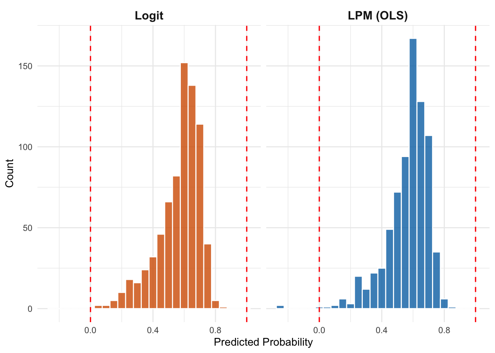
Figure 9.8 clearly shows the advantage of logistic regression: all predictions are squeezed into the valid [0, 1] range.
9.7 Interpreting Logistic Regression
The biggest challenge with logistic regression is that the coefficients are not directly interpretable in the same way as OLS coefficients. In the LPM, a one-unit increase in \(x_j\) changes the probability of \(y = 1\) by exactly \(\beta_j\) percentage points—always, regardless of where you start. In logistic regression, the relationship between \(x\) and the probability is non-linear, so the effect of a one-unit change in \(x\) depends on where you start.
There are three common ways to interpret logit coefficients, each with different strengths.
9.7.1 Interpretation 1: Log-Odds
Technically, the logit coefficients represent the change in the log-odds of the outcome. Let’s unpack what this means.
The odds of an event are defined as the probability of the event occurring divided by the probability of it not occurring:
For example, if the probability of being in the labor force is 0.75, the odds are \(0.75 / 0.25 = 3\). We would say “the odds are 3 to 1 in favor of being in the labor force.”
The log-odds (also called the “logit”) is simply the natural log of the odds:
So a one-unit increase in \(x_j\) changes the log-odds by \(\beta_j\). This is mathematically clean but not very intuitive—most people don’t think in terms of log-odds.
The main practical use of the log-odds interpretation is to determine direction: positive coefficients increase the probability of the event, and negative coefficients decrease it.
9.7.2 Interpretation 2: Odds Ratios
A more intuitive interpretation comes from exponentiating the coefficients. Since the log-odds changes by \(\beta_j\) for a one-unit increase in \(x_j\), the odds are multiplied by \(\exp(\beta_j)\). This quantity \(\exp(\beta_j)\) is called the odds ratio.
or_data <-data.frame(variable =c("Kids < 6", "Kids 6-18", "Non-wife Income", "Mother's Educ"),odds_ratio =exp(coef(logit_reg)[-1]),lower =exp(confint.default(logit_reg)[-1, 1]),upper =exp(confint.default(logit_reg)[-1, 2]))ggplot(or_data, aes(x = odds_ratio, y =reorder(variable, odds_ratio))) +geom_vline(xintercept =1, linetype ="dashed", color ="gray50") +geom_pointrange(aes(xmin = lower, xmax = upper), color ="#0072B2", size =0.8) +labs(x ="Odds Ratio (with 95% CI)",y =NULL,title ="Odds Ratios for Labor Force Participation") +theme_minimal() +theme(plot.title =element_text(hjust =0.5))
Figure 9.9: Odds ratios from the logistic regression. Values below 1 (to the left of the dashed line) decrease the odds of labor force participation; values above 1 increase them.
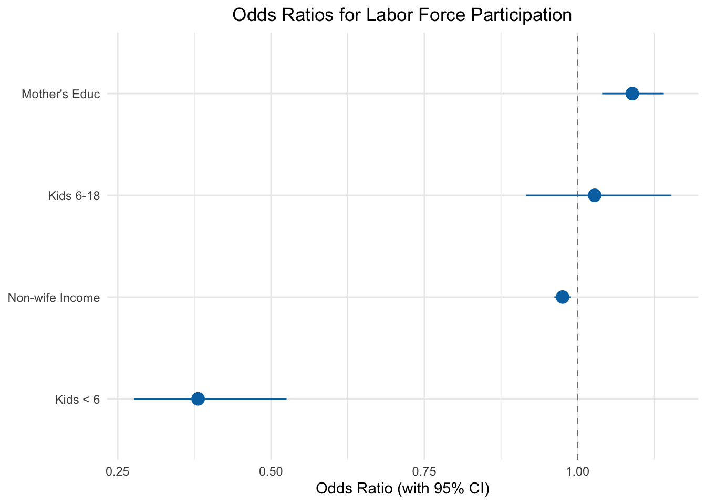
Figure 9.9 shows the odds ratios with 95% confidence intervals. Here’s how to read them:
Kids < 6: The odds ratio is about \(\exp(-0.87) \approx 0.42\). Each additional child under 6 multiplies the odds of working by 0.42—reducing them by 58%. This is a large effect.
Mother’s Educ: The odds ratio is about \(\exp(0.10) \approx 1.10\). Each additional year of mother’s education multiplies the odds of working by 1.10—increasing them by 10%.
If the confidence interval includes 1 (crosses the dashed line), the effect is not statistically significant.
Understanding Odds Ratios
An odds ratio of 1 means no effect. An odds ratio of 2 means the odds are doubled. An odds ratio of 0.5 means the odds are halved. Odds ratios are always positive—they can never be negative or zero.
Be careful not to confuse odds ratios with probability ratios. An odds ratio of 2 does not mean the probability doubles. The relationship between odds and probability is non-linear.
9.7.3 Interpretation 3: Marginal Effects at the Mean
The most practical way to compare logit estimates to LPM estimates is to compute marginal effects—the change in predicted probability for a one-unit change in \(x\), evaluated at specific values of the other variables. The most common approach is to evaluate at the mean of all explanatory variables.
Let’s compute this for the effect of one additional young child:
# Create a hypothetical person with average values for all RHS variablesmean_vals <- lf_data |>summarise(across(all_of(c("kidslt6", "kidsge6", "nwifeinc", "motheduc")), \(x) mean(x, na.rm =TRUE) ))mean_vals <- mean_vals |>slice(1) |>unlist()mean_vals
# Predicted probability at the meanlog_pred_mean <-sum(c(1, mean_vals) *coefficients(logit_reg))prob_mean <-plogis(log_pred_mean)cat("Predicted probability at the mean:", round(prob_mean, 4), "\n")
Predicted probability at the mean: 0.5689
# Predicted probability with 1 more kid under 6mean_vals_1morekid <- mean_vals +c(1, 0, 0, 0)log_pred_1morekid <-sum(c(1, mean_vals_1morekid) *coefficients(logit_reg))prob_1morekid <-plogis(log_pred_1morekid)cat("Predicted probability with 1 more kid:", round(prob_1morekid, 4), "\n")
Predicted probability with 1 more kid: 0.3346
# Marginal effectmarginal_effect <- prob_1morekid - prob_meancat("Marginal effect of 1 more kid (logit):", round(marginal_effect, 4), "\n")
Marginal effect of 1 more kid (logit): -0.2343
cat("LPM coefficient on kidslt6:", round(coef(reg)["kidslt6"], 4), "\n")
LPM coefficient on kidslt6: -0.2122
The marginal effect of one additional young child at the mean is approximately \(-0.20\)—very close to the LPM estimate of \(-0.21\). This illustrates a common and important finding: for observations near the middle of the probability distribution, the LPM and logit model often give very similar results.
But the marginal effect from the logit model changes depending on where you evaluate it. Let’s see how the marginal effect of one more young child varies across the distribution:
Figure 9.10: The marginal effect of one additional young child on labor force participation probability, computed at different values of non-wife income. Unlike the constant LPM effect (dashed line), the logit marginal effect varies—it is largest where the predicted probability is near 0.5.
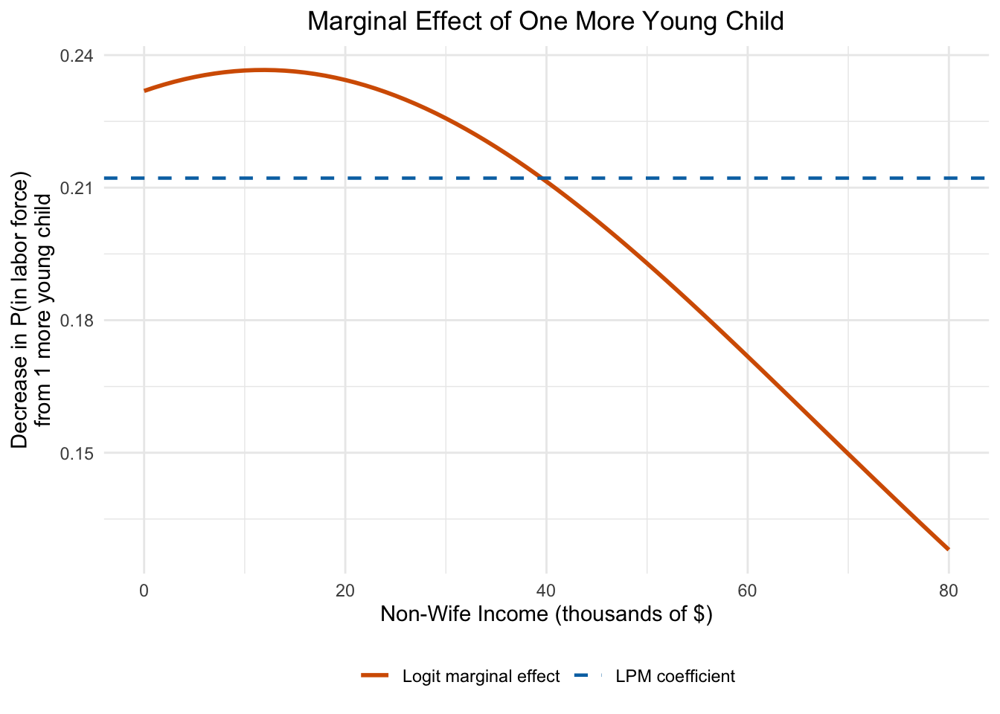
Figure 9.10 reveals a key property of the logit model: the marginal effect is not constant. The LPM assumes the same effect everywhere (the dashed line), but the logit marginal effect varies depending on the starting probability. The effect is largest when the predicted probability is near 0.5 (where the logistic curve is steepest) and smaller when the probability is near 0 or 1 (where the curve flattens out).
The plogis() Function
In R, the plogis() function converts log-odds to probabilities. It applies the logistic function: plogis(z)\(= \exp(z) / (1 + \exp(z))\). This is the inverse of the qlogis() function, which converts probabilities to log-odds.
9.8 Application: Low Birthweight and Maternal Smoking
To see binary outcome models in a health economics context, let’s examine the relationship between maternal smoking and low birthweight. Using the bwght dataset from the wooldridge package, we define low birthweight as a birthweight below 88 ounces (approximately 2,500 grams—the standard clinical threshold):
Table 9.2: LPM and Logit estimates for the probability of low birthweight.
Determinants of Low Birthweight
LPM
Logit
* p < 0.1, ** p < 0.05, *** p < 0.01
(Intercept)
0.064*
-2.647***
(0.038)
(0.681)
cigs
0.003**
0.032**
(0.001)
(0.015)
faminc
-0.001
-0.010
(0.000)
(0.007)
motheduc
0.001
0.010
(0.003)
(0.056)
male
-0.005
-0.090
(0.013)
(0.228)
Num.Obs.
1387
1387
R2
0.006
Log.Lik.
32.138
-310.351
AIC
-52.3
630.7
The LPM tells us that each additional cigarette smoked per day during pregnancy increases the probability of low birthweight by about 0.4 percentage points. The logit coefficients point in the same direction but are on the log-odds scale.
Let’s visualize the predicted probability of low birthweight as a function of maternal smoking, comparing both models:
Figure 9.11: Predicted probability of low birthweight by number of cigarettes smoked per day, from both the LPM and logit models. The models agree closely in the range of the data but diverge at extremes.
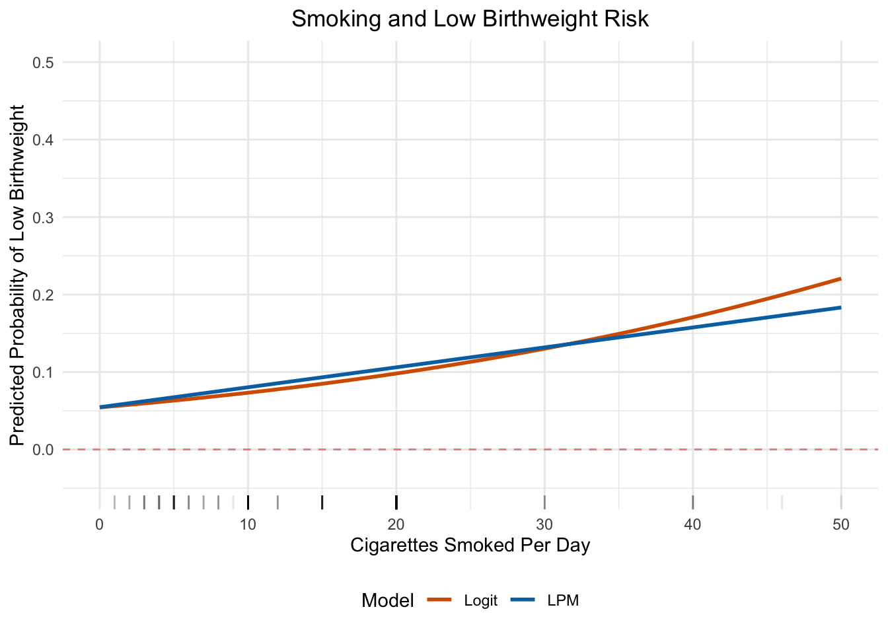
Figure 9.11 illustrates several important points. For moderate levels of smoking (roughly 0–20 cigarettes per day, where most of the data lives), the two models give very similar predictions. At high levels of smoking, the LPM continues in a straight line—eventually predicting impossibly high probabilities—while the logit curve flattens out as it approaches 1. This is exactly the kind of situation where the logit model’s bounded predictions are an advantage.
9.9 LPM vs. Logistic Regression: When to Use Which?
As we have seen repeatedly, the marginal effects from the logistic regression are often quite similar to the LPM coefficients, at least for observations with characteristics near the center of the distribution. So should we bother with logistic regression at all?
The answer depends on the context and the discipline.
In economics, many researchers prefer the LPM for its simplicity and ease of interpretation. The out-of-bounds prediction problem can often be managed by using robust standard errors to handle heteroskedasticity and by being careful about extrapolation. Most applied microeconomics papers use the LPM as their primary specification, sometimes reporting logit results as a robustness check.
In health sciences and epidemiology, logistic regression is the standard approach. Researchers in these fields tend to report odds ratios, and the logit framework integrates naturally with other methods common in biostatistics. If you are reading a paper in a health or medical journal, you will almost certainly encounter logistic regression.
One area where both camps agree is prediction. If the goal is to predict outcomes—rather than to estimate causal effects—logistic regression generally outperforms the LPM. Its predictions are guaranteed to be valid probabilities, which matters for applications like machine learning, clinical risk scores, and forecasting.
Table 9.3: LPM vs. Logistic Regression Comparison
LPM
Logistic Regression
Estimation
OLS
Maximum Likelihood
Coefficients
Change in probability
Change in log-odds
Interpretation
Direct and intuitive
Requires conversion (odds ratios or marginal effects)
Predictions
Can fall outside [0, 1]
Always in (0, 1)
Heteroskedasticity
Always present
Handled by MLE
Common in
Economics
Health sciences, epidemiology
Best for
Causal inference with easy interpretation
Prediction; settings where valid probabilities matter
Practical Advice
For this course, you should be comfortable with both approaches. The LPM is typically sufficient for causal inference questions, and its coefficients are immediately interpretable. Use logistic regression when you need predictions that are guaranteed to be valid probabilities, and when the prediction itself (rather than the coefficients) are most important. We will see an example use-case of this in Chapter 12.
9.10 Summary
When the dependent variable is binary (0 or 1), we need to think carefully about how to model it.
The linear probability model applies OLS to a binary outcome. Its coefficients are easy to interpret: \(\beta_j\) is the change in the probability of \(y = 1\) for a one-unit increase in \(x_j\). However, the LPM can produce predicted probabilities outside the [0, 1] range and inherently suffers from heteroskedasticity.
Logistic regression addresses the out-of-bounds problem by wrapping the linear prediction inside the logistic function, which maps any value to the (0, 1) interval. It is estimated using maximum likelihood rather than OLS. Logit coefficients represent changes in the log-odds and are harder to interpret directly, but they can be converted to odds ratios or marginal effects for more intuitive interpretation. Marginal effects computed at the mean are often similar to LPM coefficients.
In practice, the choice between LPM and logistic regression often comes down to disciplinary convention and the specific goals of the analysis. Economists tend to favor the LPM for its simplicity; health researchers tend to favor the logit for its theoretical properties. When the two approaches give similar results—as they often do for marginal effects near the center of the distribution—the choice matters less than getting the research question right.
9.11 Check Your Understanding
For each question below, select the best answer from the dropdown menu.
Show Explanation
In the LPM, the dependent variable is a probability (since \(y\) is 0 or 1, \(E(y|\mathbf{x}) = P(y=1|\mathbf{x})\)). So \(\beta_1\) represents the change in the probability that \(y = 1\) when \(x_1\) increases by one unit, holding everything else constant.
The logistic function \(G(z) = \exp(z)/(1 + \exp(z))\) is strictly between 0 and 1 for all values of \(z\). This means predicted probabilities from the logit model can never be negative or greater than 1, unlike the LPM which can produce impossible predictions.
The LPM coefficient on kidslt6 tells us the change in probability of labor force participation for each additional child under age 6. A coefficient of -0.21 means each young child reduces the probability by about 21 percentage points—a substantial effect.
When \(y\) is binary, the error \(\mu = y - E(y|\mathbf{x})\) can only take two values. Its variance is \(p(\mathbf{x})(1-p(\mathbf{x}))\), which depends on the predicted probability \(p(\mathbf{x})\). Since \(p(\mathbf{x})\) is a function of \(\mathbf{x}\), the error variance changes with \(\mathbf{x}\)—the definition of heteroskedasticity.
An odds ratio of 0.42 means that a one-unit increase in the variable multiplies the odds by 0.42. Since \(0.42 < 1\), the odds decrease. Specifically, the odds are reduced by \(1 - 0.42 = 0.58\), or 58%. This is different from saying the probability decreases by 58%—odds and probabilities are related but different quantities.
Logit coefficients are changes in log-odds, not changes in probability. The log-odds of \(y = 1\) is \(\ln(P(y=1)/P(y=0))\). A coefficient of \(-0.80\) means a one-unit increase in \(x_1\) decreases this log-odds by 0.80. To get the effect on probability, we need to compute marginal effects.
The logistic function has an S-shape that is nearly linear in the middle (around \(p = 0.5\)) and curves at the extremes (near 0 and 1). For observations where the predicted probability is near 0.5, the slope of the logistic function is close to constant, so the linear approximation (the LPM) works well. The two models diverge more for observations with very high or very low predicted probabilities.
For the non-smoker: \(p = 0.10\), so odds = \(0.10/0.90 = 0.111\), and log-odds = \(\ln(0.111) = -2.197\). Adding the smoking coefficient: \(-2.197 + 0.35 = -1.847\). Converting back: \(p = \exp(-1.847)/(1 + \exp(-1.847)) = 0.158/(1.158) \approx 0.136\). So the probability increases from 10% to about 14%—not 45%! This illustrates why we cannot simply add logit coefficients to probabilities.
Bailey, Michael A. 2020. Real Econometrics: The Right Tools to Answer Important Questions. Oxford University Press.
Wooldridge, Jeffrey M. 2019. Introductory Econometrics: A Modern Approach. 7th ed. Cengage Learning.